Ohkura
Ohkura · Yamagata
Ohkura
Highlighted on the Yamagata map.
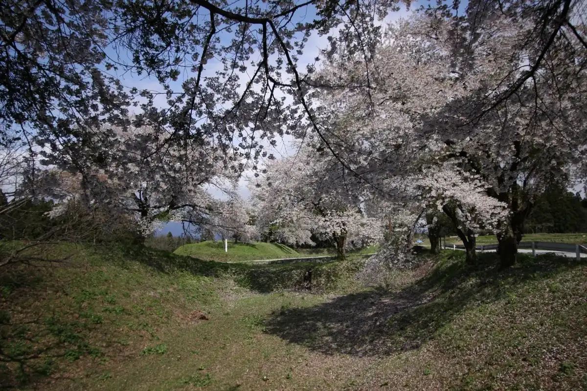
Stay
肘折温泉 丸屋
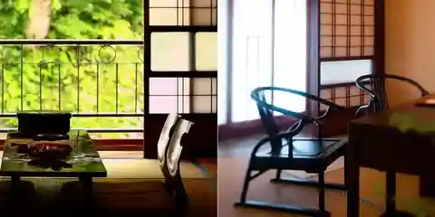
Hiji Ori Onsen Maruya
Onsen lodging in Ohkura, Yamagata.
Dining
寿屋
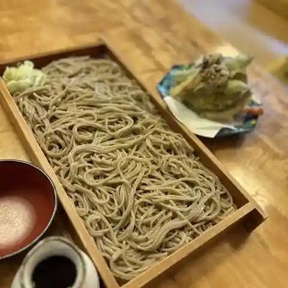
Hisashi Ya
Soba restaurant in Ohkura, Yamagata.
大蔵山蕎麦 ねぎぼうず
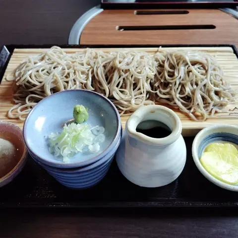
Ookura Yama Soba Negibouzu
Soba restaurant in Ohkura, Yamagata.
カネヤマ
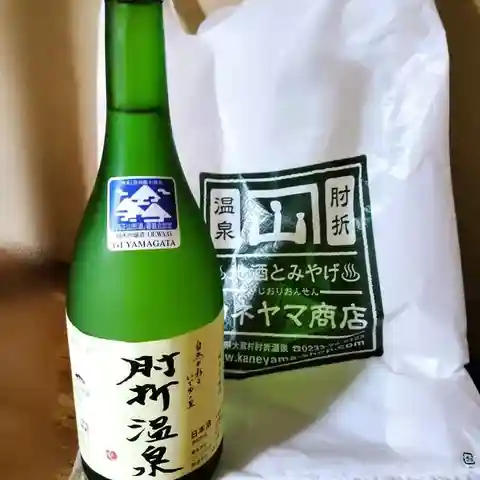
Kaneyama
Bar in Ohkura, Yamagata.
大友屋旅館
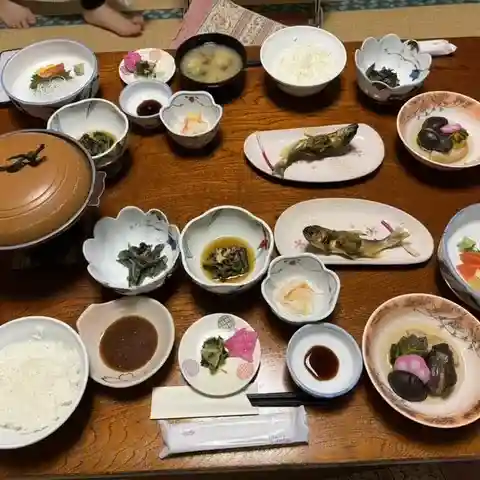
Ootomo Ya Ryokan
Inn restaurant in Ohkura, Yamagata.
肘折温泉丸屋旅館
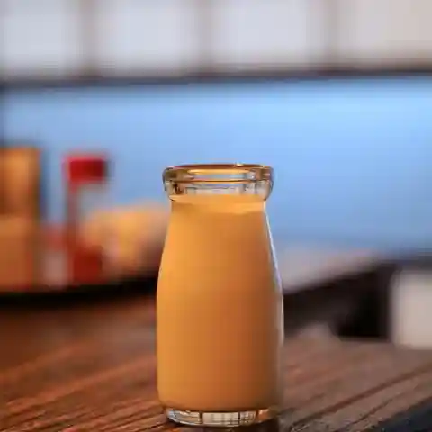
Hiji Ori Onsen Maruya Ryokan
Inn restaurant in Ohkura, Yamagata.
肘折温泉 湯宿 元河原湯
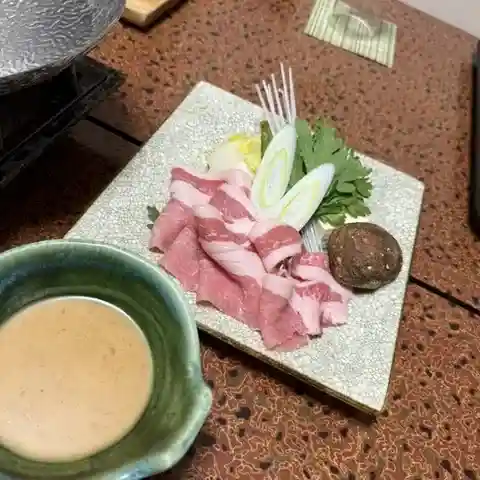
Hiji Ori Onsen Yuyado Moto Kawara Yu
Ryokan restaurant in Ohkura, Yamagata.
優心の宿 観月
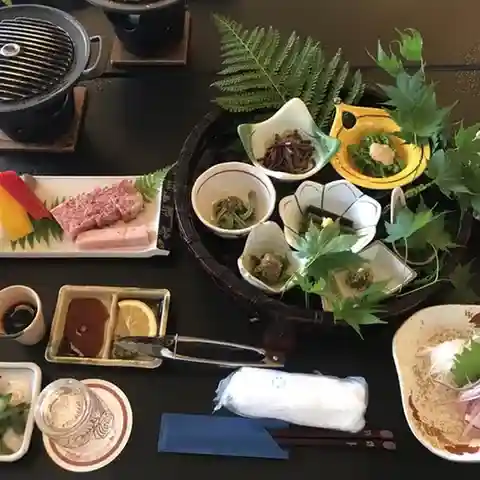
Yuu Kokoro No Yado Mizuki
Inn restaurant in Ohkura, Yamagata.
四季の宿 松屋
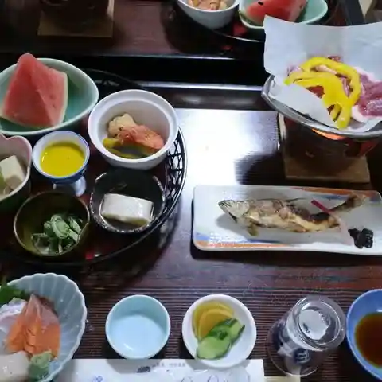
Shiki No Yado Matsuya
Inn restaurant in Ohkura, Yamagata.
大蔵食堂
Ookura Shokudou
Shokudo diner in Ohkura, Yamagata.
若松屋 村井六助
Wakamatsu Ya Murai Rokusuke
Inn restaurant in Ohkura, Yamagata.
旅館 西本屋
Ryokan Nishimoto Ya
Inn restaurant in Ohkura, Yamagata.
大蔵コッペパン
Ookura Koppepan
Bakery in Ohkura, Yamagata.
三春屋
Miharu Ya
Inn restaurant in Ohkura, Yamagata.
田舎家
Inakaya
Noodle shop in Ohkura, Yamagata.
ゑびす屋
Ebisu Ya
Inn restaurant in Ohkura, Yamagata.
金生館
Kin Nama Kan
Inn restaurant in Ohkura, Yamagata.
木村屋旅館
Kimura Ya Ryokan
Inn restaurant in Ohkura, Yamagata.
松井旅館
Matsui Ryokan
Inn restaurant in Ohkura, Yamagata.
柿崎もち屋
Kakizaki Mochi Ya
Ramen shop in Ohkura, Yamagata.
肘折いでゆ館
Hiji Ori Ideyu Kan
Shokudo diner in Ohkura, Yamagata.
ほていや
Hoteiya
Japanese sweets shop in Ohkura, Yamagata.
ふかさ
Fukasa
Izakaya in Ohkura, Yamagata.
横山仁右エ門商店
Yokoyama Hitoshi Migi E Mon Shouten
Bar in Ohkura, Yamagata.
三浦屋旅館
Miura Ya Ryokan
Inn restaurant in Ohkura, Yamagata.
Sights
Hijiori Onsen
A hot spring town that still retains the atmosphere of a traditional hot spring resort.
Shikamura Rice Terraces
Four mountain hamlets of Okura are known together as Shikamura. Their rice terraces cover about 120 hectares, among the largest in Tohoku, and are listed among Japan's 100 best rice terraces.
Caldera Hot Spring Baths
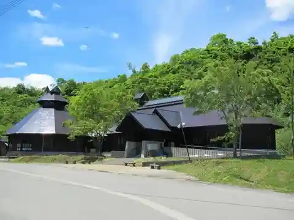
Caldera Hot Spring Baths(Karudera Onsenkan) is a building featuring a wood-themed design.
Okura Yuki Monogatari
Come and meet Okura-kun, an iconic winter symbol in Okura Village!
Jizogura
A place luck in marriage and good business